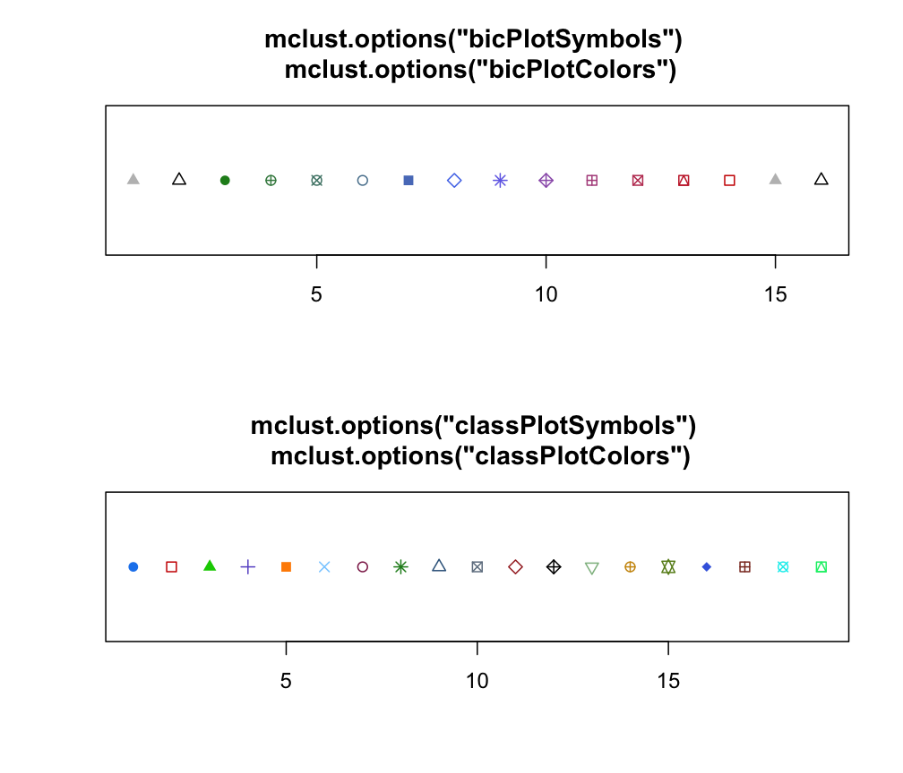

mclust.options.RdSet or retrieve default values for use with MCLUST package.
mclust.options(...)one or more arguments provided in the name = value form, or no argument at all may be given.
Available arguments are described in the Details section below.
mclust.options() is provided for assigning or retrieving default values used by various functions in MCLUST.
Available options are:
emModelNamesA vector of 3-character strings that are associated with multivariate
models for which EM estimation is available in MCLUST.
The current default is all of the multivariate mixture models
supported in MCLUST.
The help file for mclustModelNames describes the
available models.
hcModelNameA character string specifying the multivariate model to be used in model-based agglomerative hierarchical clustering for initialization of EM algorithm.
The available models are the following:
"EII"spherical, equal volume;
"EEE"ellipsoidal, equal volume, shape, and orientation;
"VII"spherical, unequal volume;
"VVV"ellipsoidal, varying volume, shape, and orientation (default).
hcUseA character string specifying the type of input variables/transformation to be used in model-based agglomerative hierarchical clustering for initialization of EM algorithm.
Possible values are:
"VARS"original variables;
"STD"standardized variables (centered and scaled);
"SPH"sphered variables (centered, scaled and uncorrelated) computed using SVD;
"PCS"principal components computed using SVD on centered variables (i.e. using the covariance matrix);
"PCR"principal components computed using SVD on standardized (center and scaled) variables (i.e. using the correlation matrix);
"SVD"scaled SVD transformation (default);
"RND"no transformation is applied but a random hierarchical structure is returned (see hcRandomPairs).
For further details see Scrucca and Raftery (2015), Scrucca et al. (2016).
subsetA value specifying the maximal sample size to be used in the model-based
hierarchical clustering to start the EM algorithm.
If data sample size exceeds this value, a random sample is drawn of size
specified by subset.
fillEllipsesA logical value specifying whether or not to fill with transparent
colors ellipses corresponding to the within-cluster covariances in case
of "classification" plot for 'Mclust' objects, or
"scatterplot" graphs for 'MclustDA' objects.
bicPlotSymbolsA vector whose entries correspond to graphics symbols for plotting the
BIC values output from Mclust and mclustBIC.
These are displayed in the legend which appears at the lower right
of the BIC plots.
bicPlotColorsA vector whose entries correspond to colors for plotting the
BIC curves from output from Mclust and
mclustBIC.
These are displayed in the legend which appears at the lower right
of the BIC plots.
classPlotSymbolsA vector whose entries are either integers corresponding to graphics symbols or single characters for indicating classifications when plotting data. Classes are assigned symbols in the given order.
classPlotColorsA vector whose entries correspond to colors for indicating classifications when plotting data. Classes are assigned colors in the given order.
warnA logical value indicating whether or not to issue certain warnings.
Most of these warnings have to do with situations in which
singularities are encountered.
The default is warn = FALSE.
The parameter values set via a call to this function will remain in effect for the rest of the session, affecting the subsequent behaviour of the functions for which the given parameters are relevant.
If the argument list is empty the function returns the current list of values. If the argument list is not empty, the returned list is invisible.
Scrucca L. and Raftery A. E. (2015) Improved initialisation of model-based clustering using Gaussian hierarchical partitions. Advances in Data Analysis and Classification, 9/4, pp. 447-460.
Scrucca L., Fop M., Murphy T. B. and Raftery A. E. (2016) mclust 5: clustering, classification and density estimation using Gaussian finite mixture models, The R Journal, 8/1, pp. 289-317.
opt <- mclust.options() # save default values
irisBIC <- mclustBIC(iris[,-5])
summary(irisBIC, iris[,-5])
#> Best BIC values:
#> VEV,2 VEV,3 VVV,2
#> BIC -561.7285 -562.5522369 -574.01783
#> BIC diff 0.0000 -0.8237748 -12.28937
#>
#> Classification table for model (VEV,2):
#>
#> 1 2
#> 50 100
mclust.options(emModelNames = c("EII", "EEI", "EEE"))
irisBIC <- mclustBIC(iris[,-5])
summary(irisBIC, iris[,-5])
#> Best BIC values:
#> EEE,5 EEE,6 EEE,7
#> BIC -604.8131 -609.854322 -632.49473
#> BIC diff 0.0000 -5.041255 -27.68166
#>
#> Classification table for model (EEE,5):
#>
#> 1 2 3 4 5
#> 6 44 49 35 16
mclust.options(opt) # restore default values
mclust.options()
#> $emModelNames
#> [1] "EII" "VII" "EEI" "VEI" "EVI" "VVI" "EEE" "VEE" "EVE" "VVE" "EEV" "VEV"
#> [13] "EVV" "VVV"
#>
#> $hcModelName
#> [1] "VVV"
#>
#> $hcUse
#> [1] "SVD"
#>
#> $subset
#> [1] 2000
#>
#> $fillEllipses
#> [1] FALSE
#>
#> $bicPlotSymbols
#> EII VII EEI EVI VEI VVI EEE VEE EVE VVE EEV VEV EVV VVV E V
#> 17 2 16 10 13 1 15 8 5 9 12 7 14 0 17 2
#>
#> $bicPlotColors
#> EII VII EEI EVI VEI VVI EEE VEE
#> "gray" "black" "#218B21" "#41884F" "#508476" "#58819C" "#597DC3" "#5178EA"
#> EVE VVE EEV VEV EVV VVV E V
#> "#716EE7" "#9B60B8" "#B2508B" "#C03F60" "#C82A36" "#CC0000" "gray" "black"
#>
#> $classPlotSymbols
#> [1] 16 0 17 3 15 4 1 8 2 7 5 9 6 10 11 18 12 13 14
#>
#> $classPlotColors
#> [1] "dodgerblue2" "red3" "green3" "slateblue"
#> [5] "darkorange" "skyblue1" "violetred4" "forestgreen"
#> [9] "steelblue4" "slategrey" "brown" "black"
#> [13] "darkseagreen" "darkgoldenrod3" "olivedrab" "royalblue"
#> [17] "tomato4" "cyan2" "springgreen2"
#>
#> $warn
#> [1] FALSE
#>
oldpar <- par(mfrow = c(2,1), no.readonly = TRUE)
n <- with(mclust.options(),
max(sapply(list(bicPlotSymbols, bicPlotColors),length)))
plot(seq(n), rep(1,n), ylab = "", xlab = "", yaxt = "n",
pch = mclust.options("bicPlotSymbols"),
col = mclust.options("bicPlotColors"))
title("mclust.options(\"bicPlotSymbols\") \n mclust.options(\"bicPlotColors\")")
n <- with(mclust.options(),
max(sapply(list(classPlotSymbols, classPlotColors),length)))
plot(seq(n), rep(1,n), ylab = "", xlab = "", yaxt = "n",
pch = mclust.options("classPlotSymbols"),
col = mclust.options("classPlotColors"))
title("mclust.options(\"classPlotSymbols\") \n mclust.options(\"classPlotColors\")")

par(oldpar)